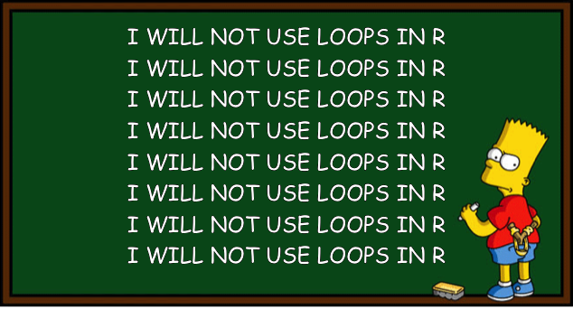
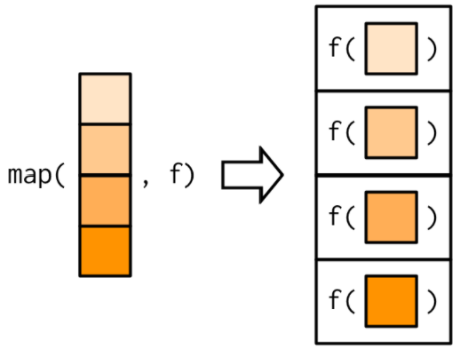
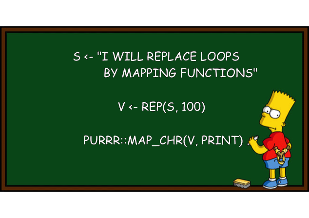

Iteration
Tuesday, 5/20
Today we will…
- Project Proposal + Data
- New Material1
- Iteration aka Performing Repeated Tasks
- Vectorization
- Efficient Iteration: the
map()family
- PA 8.1: The Twelve Days of Christmas
- Lab 8: Searching for Efficiency
Project Proposal + Data
You must complete the objectives and write up the written components outlined under Section 1 on the Project Details page on Canvas.
- Choose variables that you think would feasibly be related (you have a hypothesis)
- You may want to check there isn’t a huge amount of missing data
- Due on Canvas by 11:59pm on Friday, 5/23
- “Group” Canvas assignment, so only one person needs to submit it in your group
Performing Repeated Tasks
Repetition
Type out the task over and over.
Do not do this.
Iteration
Repeatedly execute the same operation over and over.
- Loops (e.g.,
for()andwhile()) allow us to iterate.
Iteration
Repeatedly execute the same operation over and over.
- Loops (e.g.,
for()andwhile()) allow us to iterate.
Vectorization
Many operations in R are vectorized.
- These functions operate on vectors of values rather than a single value.
- We can iterate without writing a loop.
Vectorization
Many operations in R are vectorized.
- These functions operate on vectors of values rather than a single value.
- We can iterate without writing a loop.
Vectorization
Not every function is vectorized.
- E.g., a function using
if()statements cannot operate on vectors.
The if(x > 0) statement can only be checked for something of length 1 (a single number, not a vector).
Vectorization
Not every function is vectorized.
- E.g., a function using
if()statements cannot operate on vectors.
Vectorization
Not every function is vectorized.
- Vectorized versions of
if()statements?
if_else() and case_when()
pos_neg_zero <- function(x){
state <- case_when(x > 0 ~ "Greater than 0!",
x < 0 ~ "Less than 0!",
.default = "Equal to 0!")
return(state)
}
x <- seq(from = -4, to = 3)
pos_neg_zero(x)[1] "Less than 0!" "Less than 0!" "Less than 0!" "Less than 0!"
[5] "Equal to 0!" "Greater than 0!" "Greater than 0!" "Greater than 0!"Some functions cannot be vectorized!
Applying class() to a single variable in a dataframe returns the data type of that column:
Trying to apply class() to every variable in a dataframe returns the data type of the dataframe:
What can we do instead?
Write a for() loop…
data_type <- rep(NA, length = ncol(penguins))
for(i in 1:ncol(penguins)){
data_type[i] <- class(penguins[[i]])
}
# format table nicely
data.frame(column = names(penguins),
type = data_type) |>
pivot_wider(names_from = column,
values_from = type) |>
knitr::kable() |>
kableExtra::kable_styling(font_size = 30)| species | island | bill_length_mm | bill_depth_mm | flipper_length_mm | body_mass_g | sex | year |
|---|---|---|---|---|---|---|---|
| factor | factor | numeric | numeric | integer | integer | factor | integer |
… but loops are computationally intensive!
What can we do instead?
What about across()?
- Easily perform the same operation on multiple columns.
| species | island | bill_length_mm | bill_depth_mm | flipper_length_mm | body_mass_g | sex | year |
|---|---|---|---|---|---|---|---|
| factor | factor | numeric | numeric | integer | integer | factor | integer |
Ugh. Internally, across() uses a for() loop!
for (j in seq_fns) {
fn <- fns[[j]]
out[[k]] <- fn(col, ...)
k <- k + 1LWhat can we do instead?
…
Functional Programming with purrr
The purrr package breaks common list manipulations into small, independent pieces.

Brief Review: Lists
A list is a 1-dimensional, heterogeneous data structure.
- There are no restrictions on what data type or structure it can contain – values, vectors, other lists, dataframes, etc.
- Lists are indexed with
[]or[[]].
Brief Review: Lists
A dataframe / tibble is a specially formatted list of columns!
# A tibble: 8 × 1
bill_length_mm
<dbl>
1 39.1
2 39.5
3 40.3
4 NA
5 36.7
6 39.3
7 38.9
8 39.2[1] 39.1 39.5 40.3 NA 36.7 39.3 38.9 39.2The purrr package works for lists, so it works for dataframes.
map()
The map() function iterates through each item in a list (or vector) and applies a function, then returns the new list.

Note: the first argument in map() is the list, so if we pipe into it, we only specify the function!
map() + Dataframes
A dataframe is just a list of columns – map() will apply a function to every column.
The map() Family
The map_xxx() variants allow you to specify the type of output you want.
map()creates a list.map_chr()creates a character vector.map_lgl()creates an logical vector.map_int()creates a integer vector.map_dbl()creates a numeric vector.
All take in a list or vector and a function as arguments.
map() + penguins
Calculate the mean of each column.
bill_length_mm bill_depth_mm flipper_length_mm body_mass_g
43.92193 17.15117 200.91520 4201.75439 Output is a vector of doubles.
Calculate the number of NAs in each column.
species island bill_length_mm bill_depth_mm
0 0 2 2
flipper_length_mm body_mass_g sex year
2 2 11 0 Output is a vector of integers.
Calculate if there are any NAs in each column.
species island bill_length_mm bill_depth_mm
FALSE FALSE TRUE TRUE
flipper_length_mm body_mass_g sex year
TRUE TRUE TRUE FALSE Output is a vector of booleans.
map_if()
The map_if() function allows us to conditionally apply a function to each item in a list.
# A tibble: 8 × 5
species island bill_length_mm[,1] bill_depth_mm[,1] sex
<fct> <fct> <dbl> <dbl> <fct>
1 Adelie Torgersen -0.883 0.784 male
2 Adelie Torgersen -0.810 0.126 female
3 Adelie Torgersen -0.663 0.430 female
4 Adelie Torgersen NA NA <NA>
5 Adelie Torgersen -1.32 1.09 female
6 Adelie Torgersen -0.847 1.75 male
7 Adelie Torgersen -0.920 0.329 female
8 Adelie Torgersen -0.865 1.24 male $species
[1] Adelie Adelie Adelie Adelie Adelie Adelie Adelie
[8] Adelie Adelie Adelie Adelie Adelie Adelie Adelie
[15] Adelie Adelie Adelie Adelie Adelie Adelie Adelie
[22] Adelie Adelie Adelie Adelie Adelie Adelie Adelie
[29] Adelie Adelie Adelie Adelie Adelie Adelie Adelie
[36] Adelie Adelie Adelie Adelie Adelie Adelie Adelie
[43] Adelie Adelie Adelie Adelie Adelie Adelie Adelie
[50] Adelie Adelie Adelie Adelie Adelie Adelie Adelie
[57] Adelie Adelie Adelie Adelie Adelie Adelie Adelie
[64] Adelie Adelie Adelie Adelie Adelie Adelie Adelie
[71] Adelie Adelie Adelie Adelie Adelie Adelie Adelie
[78] Adelie Adelie Adelie Adelie Adelie Adelie Adelie
[85] Adelie Adelie Adelie Adelie Adelie Adelie Adelie
[92] Adelie Adelie Adelie Adelie Adelie Adelie Adelie
[99] Adelie Adelie Adelie Adelie Adelie Adelie Adelie
[106] Adelie Adelie Adelie Adelie Adelie Adelie Adelie
[113] Adelie Adelie Adelie Adelie Adelie Adelie Adelie
[120] Adelie Adelie Adelie Adelie Adelie Adelie Adelie
[127] Adelie Adelie Adelie Adelie Adelie Adelie Adelie
[134] Adelie Adelie Adelie Adelie Adelie Adelie Adelie
[141] Adelie Adelie Adelie Adelie Adelie Adelie Adelie
[148] Adelie Adelie Adelie Adelie Adelie Gentoo Gentoo
[155] Gentoo Gentoo Gentoo Gentoo Gentoo Gentoo Gentoo
[162] Gentoo Gentoo Gentoo Gentoo Gentoo Gentoo Gentoo
[169] Gentoo Gentoo Gentoo Gentoo Gentoo Gentoo Gentoo
[176] Gentoo Gentoo Gentoo Gentoo Gentoo Gentoo Gentoo
[183] Gentoo Gentoo Gentoo Gentoo Gentoo Gentoo Gentoo
[190] Gentoo Gentoo Gentoo Gentoo Gentoo Gentoo Gentoo
[197] Gentoo Gentoo Gentoo Gentoo Gentoo Gentoo Gentoo
[204] Gentoo Gentoo Gentoo Gentoo Gentoo Gentoo Gentoo
[211] Gentoo Gentoo Gentoo Gentoo Gentoo Gentoo Gentoo
[218] Gentoo Gentoo Gentoo Gentoo Gentoo Gentoo Gentoo
[225] Gentoo Gentoo Gentoo Gentoo Gentoo Gentoo Gentoo
[232] Gentoo Gentoo Gentoo Gentoo Gentoo Gentoo Gentoo
[239] Gentoo Gentoo Gentoo Gentoo Gentoo Gentoo Gentoo
[246] Gentoo Gentoo Gentoo Gentoo Gentoo Gentoo Gentoo
[253] Gentoo Gentoo Gentoo Gentoo Gentoo Gentoo Gentoo
[260] Gentoo Gentoo Gentoo Gentoo Gentoo Gentoo Gentoo
[267] Gentoo Gentoo Gentoo Gentoo Gentoo Gentoo Gentoo
[274] Gentoo Gentoo Gentoo Chinstrap Chinstrap Chinstrap Chinstrap
[281] Chinstrap Chinstrap Chinstrap Chinstrap Chinstrap Chinstrap Chinstrap
[288] Chinstrap Chinstrap Chinstrap Chinstrap Chinstrap Chinstrap Chinstrap
[295] Chinstrap Chinstrap Chinstrap Chinstrap Chinstrap Chinstrap Chinstrap
[302] Chinstrap Chinstrap Chinstrap Chinstrap Chinstrap Chinstrap Chinstrap
[309] Chinstrap Chinstrap Chinstrap Chinstrap Chinstrap Chinstrap Chinstrap
[316] Chinstrap Chinstrap Chinstrap Chinstrap Chinstrap Chinstrap Chinstrap
[323] Chinstrap Chinstrap Chinstrap Chinstrap Chinstrap Chinstrap Chinstrap
[330] Chinstrap Chinstrap Chinstrap Chinstrap Chinstrap Chinstrap Chinstrap
[337] Chinstrap Chinstrap Chinstrap Chinstrap Chinstrap Chinstrap Chinstrap
[344] Chinstrap
Levels: Adelie Chinstrap Gentoo
$island
[1] Torgersen Torgersen Torgersen Torgersen Torgersen Torgersen Torgersen
[8] Torgersen Torgersen Torgersen Torgersen Torgersen Torgersen Torgersen
[15] Torgersen Torgersen Torgersen Torgersen Torgersen Torgersen Biscoe
[22] Biscoe Biscoe Biscoe Biscoe Biscoe Biscoe Biscoe
[29] Biscoe Biscoe Dream Dream Dream Dream Dream
[36] Dream Dream Dream Dream Dream Dream Dream
[43] Dream Dream Dream Dream Dream Dream Dream
[50] Dream Biscoe Biscoe Biscoe Biscoe Biscoe Biscoe
[57] Biscoe Biscoe Biscoe Biscoe Biscoe Biscoe Biscoe
[64] Biscoe Biscoe Biscoe Biscoe Biscoe Torgersen Torgersen
[71] Torgersen Torgersen Torgersen Torgersen Torgersen Torgersen Torgersen
[78] Torgersen Torgersen Torgersen Torgersen Torgersen Torgersen Torgersen
[85] Dream Dream Dream Dream Dream Dream Dream
[92] Dream Dream Dream Dream Dream Dream Dream
[99] Dream Dream Biscoe Biscoe Biscoe Biscoe Biscoe
[106] Biscoe Biscoe Biscoe Biscoe Biscoe Biscoe Biscoe
[113] Biscoe Biscoe Biscoe Biscoe Torgersen Torgersen Torgersen
[120] Torgersen Torgersen Torgersen Torgersen Torgersen Torgersen Torgersen
[127] Torgersen Torgersen Torgersen Torgersen Torgersen Torgersen Dream
[134] Dream Dream Dream Dream Dream Dream Dream
[141] Dream Dream Dream Dream Dream Dream Dream
[148] Dream Dream Dream Dream Dream Biscoe Biscoe
[155] Biscoe Biscoe Biscoe Biscoe Biscoe Biscoe Biscoe
[162] Biscoe Biscoe Biscoe Biscoe Biscoe Biscoe Biscoe
[169] Biscoe Biscoe Biscoe Biscoe Biscoe Biscoe Biscoe
[176] Biscoe Biscoe Biscoe Biscoe Biscoe Biscoe Biscoe
[183] Biscoe Biscoe Biscoe Biscoe Biscoe Biscoe Biscoe
[190] Biscoe Biscoe Biscoe Biscoe Biscoe Biscoe Biscoe
[197] Biscoe Biscoe Biscoe Biscoe Biscoe Biscoe Biscoe
[204] Biscoe Biscoe Biscoe Biscoe Biscoe Biscoe Biscoe
[211] Biscoe Biscoe Biscoe Biscoe Biscoe Biscoe Biscoe
[218] Biscoe Biscoe Biscoe Biscoe Biscoe Biscoe Biscoe
[225] Biscoe Biscoe Biscoe Biscoe Biscoe Biscoe Biscoe
[232] Biscoe Biscoe Biscoe Biscoe Biscoe Biscoe Biscoe
[239] Biscoe Biscoe Biscoe Biscoe Biscoe Biscoe Biscoe
[246] Biscoe Biscoe Biscoe Biscoe Biscoe Biscoe Biscoe
[253] Biscoe Biscoe Biscoe Biscoe Biscoe Biscoe Biscoe
[260] Biscoe Biscoe Biscoe Biscoe Biscoe Biscoe Biscoe
[267] Biscoe Biscoe Biscoe Biscoe Biscoe Biscoe Biscoe
[274] Biscoe Biscoe Biscoe Dream Dream Dream Dream
[281] Dream Dream Dream Dream Dream Dream Dream
[288] Dream Dream Dream Dream Dream Dream Dream
[295] Dream Dream Dream Dream Dream Dream Dream
[302] Dream Dream Dream Dream Dream Dream Dream
[309] Dream Dream Dream Dream Dream Dream Dream
[316] Dream Dream Dream Dream Dream Dream Dream
[323] Dream Dream Dream Dream Dream Dream Dream
[330] Dream Dream Dream Dream Dream Dream Dream
[337] Dream Dream Dream Dream Dream Dream Dream
[344] Dream
Levels: Biscoe Dream Torgersen
$bill_length_mm
[,1]
[1,] -0.88320467
[2,] -0.80993901
[3,] -0.66340769
[4,] NA
[5,] -1.32279862
[6,] -0.84657184
[7,] -0.91983750
[8,] -0.86488825
[9,] -1.79902541
[10,] -0.35202864
[11,] -1.12131806
[12,] -1.12131806
[13,] -0.51687637
[14,] -0.97478674
[15,] -1.70744334
[16,] -1.34111504
[17,] -0.95647033
[18,] -0.26044656
[19,] -1.74407616
[20,] 0.38062795
[21,] -1.12131806
[22,] -1.13963448
[23,] -1.46932994
[24,] -1.04805240
[25,] -0.93815391
[26,] -1.57922843
[27,] -0.60845845
[28,] -0.62677486
[29,] -1.10300165
[30,] -0.62677486
[31,] -0.80993901
[32,] -1.23121655
[33,] -0.80993901
[34,] -0.55350920
[35,] -1.37774787
[36,] -0.86488825
[37,] -0.93815391
[38,] -0.31539581
[39,] -1.15795089
[40,] -0.75498976
[41,] -1.35943145
[42,] -0.57182562
[43,] -1.45101353
[44,] 0.03261607
[45,] -1.26784938
[46,] -0.79162259
[47,] -0.51687637
[48,] -1.17626731
[49,] -1.45101353
[50,] -0.29707939
[51,] -0.79162259
[52,] -0.70004052
[53,] -1.63417768
[54,] -0.35202864
[55,] -1.72575975
[56,] -0.46192713
[57,] -0.90152108
[58,] -0.60845845
[59,] -1.35943145
[60,] -1.15795089
[61,] -1.50596277
[62,] -0.48024354
[63,] -1.15795089
[64,] -0.51687637
[65,] -1.37774787
[66,] -0.42529430
[67,] -1.54259560
[68,] -0.51687637
[69,] -1.46932994
[70,] -0.38866147
[71,] -1.90892390
[72,] -0.77330618
[73,] -0.79162259
[74,] 0.34399512
[75,] -1.54259560
[76,] -0.20549732
[77,] -0.55350920
[78,] -1.23121655
[79,] -1.41438070
[80,] -0.33371222
[81,] -1.70744334
[82,] -0.18718091
[83,] -1.32279862
[84,] -1.61586126
[85,] -1.21290014
[86,] -0.48024354
[87,] -1.39606428
[88,] -1.28616579
[89,] -1.02973599
[90,] -0.91983750
[91,] -1.50596277
[92,] -0.51687637
[93,] -1.81734182
[94,] -0.79162259
[95,] -1.41438070
[96,] -0.57182562
[97,] -1.06636882
[98,] -0.66340769
[99,] -1.98218956
[100,] -0.13223166
[101,] -1.63417768
[102,] -0.53519279
[103,] -1.13963448
[104,] -1.12131806
[105,] -1.10300165
[106,] -0.77330618
[107,] -0.97478674
[108,] -1.04805240
[109,] -1.06636882
[110,] -0.13223166
[111,] -1.06636882
[112,] 0.30736229
[113,] -0.77330618
[114,] -0.31539581
[115,] -0.79162259
[116,] -0.22381374
[117,] -0.97478674
[118,] -1.21290014
[119,] -1.50596277
[120,] -0.51687637
[121,] -1.41438070
[122,] -1.13963448
[123,] -0.68172411
[124,] -0.46192713
[125,] -1.59754485
[126,] -0.60845845
[127,] -0.93815391
[128,] -0.44361071
[129,] -0.90152108
[130,] 0.03261607
[131,] -0.99310316
[132,] -0.15054808
[133,] -1.30448221
[134,] -1.17626731
[135,] -1.06636882
[136,] -0.51687637
[137,] -1.52427919
[138,] -0.68172411
[139,] -1.26784938
[140,] -0.77330618
[141,] -0.68172411
[142,] -0.60845845
[143,] -2.16535371
[144,] -0.59014203
[145,] -1.21290014
[146,] -0.90152108
[147,] -0.86488825
[148,] -1.34111504
[149,] -1.45101353
[150,] -1.12131806
[151,] -1.45101353
[152,] -0.44361071
[153,] 0.39894437
[154,] 1.11328455
[155,] 0.87517115
[156,] 1.11328455
[157,] 0.67369059
[158,] 0.47221003
[159,] 0.27072946
[160,] 0.50884286
[161,] -0.11391525
[162,] 0.52715927
[163,] -0.55350920
[164,] 0.93012040
[165,] 0.28904588
[166,] 0.82022191
[167,] 0.34399512
[168,] 0.98506964
[169,] -0.35202864
[170,] 0.96675323
[171,] 0.41726078
[172,] 0.87517115
[173,] 1.14991738
[174,] 0.21578022
[175,] 0.47221003
[176,] 0.43557720
[177,] -0.18718091
[178,] 0.39894437
[179,] 0.10588173
[180,] 0.71032342
[181,] 0.78358908
[182,] 1.11328455
[183,] 0.61874135
[184,] -0.20549732
[185,] 0.21578022
[186,] 2.87166037
[187,] 0.94843681
[188,] 0.82022191
[189,] -0.24213015
[190,] 0.08756532
[191,] 0.01429966
[192,] 0.87517115
[193,] -0.22381374
[194,] 1.04001889
[195,] 0.25241305
[196,] 1.04001889
[197,] 1.20486662
[198,] -0.05896600
[199,] 0.28904588
[200,] 1.20486662
[201,] 0.17914739
[202,] 0.23409663
[203,] 0.49052644
[204,] 0.83853832
[205,] 0.21578022
[206,] 1.13160096
[207,] 0.47221003
[208,] 0.19746381
[209,] -0.02233317
[210,] 0.28904588
[211,] -0.13223166
[212,] 1.18655021
[213,] 0.25241305
[214,] 0.41726078
[215,] 0.32567871
[216,] 1.90089038
[217,] 0.34399512
[218,] 1.07665172
[219,] 0.41726078
[220,] 1.02170247
[221,] -0.07728242
[222,] 1.24149945
[223,] 0.69200701
[224,] 0.45389361
[225,] 0.78358908
[226,] 0.47221003
[227,] 0.45389361
[228,] 0.85685474
[229,] 0.65537418
[230,] 1.31476511
[231,] 0.23409663
[232,] 0.23409663
[233,] 0.94843681
[234,] 1.57119492
[235,] 0.63705776
[236,] 1.11328455
[237,] 0.17914739
[238,] 1.25981586
[239,] -0.09559883
[240,] 1.35139794
[241,] 0.65537418
[242,] 1.49792926
[243,] 0.65537418
[244,] 1.51624567
[245,] 0.28904588
[246,] 1.02170247
[247,] 0.10588173
[248,] 1.25981586
[249,] 1.00338606
[250,] 0.54547569
[251,] 0.82022191
[252,] 1.31476511
[253,] 0.83853832
[254,] 2.19395302
[255,] 0.60042493
[256,] 0.94843681
[257,] 0.61874135
[258,] 0.52715927
[259,] -0.40697788
[260,] 1.73604265
[261,] -0.11391525
[262,] 0.76527266
[263,] 1.20486662
[264,] 1.07665172
[265,] -0.07728242
[266,] 1.38803077
[267,] 0.41726078
[268,] 2.04742170
[269,] 0.10588173
[270,] 0.89348757
[271,] 0.60042493
[272,] NA
[273,] 0.52715927
[274,] 1.18655021
[275,] 0.23409663
[276,] 1.09496813
[277,] 0.47221003
[278,] 1.11328455
[279,] 1.35139794
[280,] 0.27072946
[281,] 1.60782775
[282,] 0.23409663
[283,] 0.39894437
[284,] 1.35139794
[285,] 0.38062795
[286,] 1.35139794
[287,] 0.49052644
[288,] 1.42466360
[289,] 0.56379210
[290,] 1.47961284
[291,] 0.36231154
[292,] 1.20486662
[293,] 1.16823379
[294,] 2.57859773
[295,] 0.45389361
[296,] 0.96675323
[297,] -0.27876298
[298,] 0.83853832
[299,] -0.13223166
[300,] 1.22318303
[301,] 0.50884286
[302,] 1.47961284
[303,] 1.20486662
[304,] 1.02170247
[305,] 0.45389361
[306,] 1.62614416
[307,] -0.55350920
[308,] 1.88257397
[309,] -0.26044656
[310,] 1.29644869
[311,] 1.05833530
[312,] 0.65537418
[313,] 0.67369059
[314,] 1.47961284
[315,] 0.54547569
[316,] 1.75435906
[317,] 0.93012040
[318,] 0.41726078
[319,] 1.27813228
[320,] 0.28904588
[321,] 1.27813228
[322,] 1.25981586
[323,] 1.13160096
[324,] 0.93012040
[325,] 1.38803077
[326,] 1.07665172
[327,] 0.76527266
[328,] 1.36971435
[329,] 0.32567871
[330,] 1.24149945
[331,] -0.26044656
[332,] 1.51624567
[333,] 0.23409663
[334,] 0.98506964
[335,] 1.14991738
[336,] 0.30736229
[337,] 1.46129643
[338,] 0.52715927
[339,] 0.32567871
[340,] 2.17563660
[341,] -0.07728242
[342,] 1.04001889
[343,] 1.25981586
[344,] 1.14991738
attr(,"scaled:center")
[1] 43.92193
attr(,"scaled:scale")
[1] 5.459584
$bill_depth_mm
[,1]
[1,] 0.78430007
[2,] 0.12600328
[3,] 0.42983257
[4,] NA
[5,] 1.08812936
[6,] 1.74642615
[7,] 0.32855614
[8,] 1.24004400
[9,] 0.48047078
[10,] 1.54387329
[11,] -0.02591137
[12,] 0.07536506
[13,] 0.22727971
[14,] 2.05025544
[15,] 1.99961722
[16,] 0.32855614
[17,] 0.93621471
[18,] 1.79706436
[19,] 0.63238542
[20,] 2.20217008
[21,] 0.58174721
[22,] 0.78430007
[23,] 1.03749114
[24,] 0.48047078
[25,] 0.02472685
[26,] 0.88557650
[27,] 0.73366185
[28,] 0.37919435
[29,] 0.73366185
[30,] 0.88557650
[31,] -0.22846423
[32,] 0.48047078
[33,] 0.32855614
[34,] 0.88557650
[35,] -0.07654958
[36,] 1.99961722
[37,] 1.44259686
[38,] 0.68302364
[39,] 1.08812936
[40,] 0.98685293
[41,] 0.42983257
[42,] 0.63238542
[43,] 0.68302364
[44,] 1.29068222
[45,] -0.12718780
[46,] 0.83493828
[47,] 0.93621471
[48,] 0.88557650
[49,] 0.37919435
[50,] 2.05025544
[51,] 0.27791792
[52,] 0.88557650
[53,] 0.37919435
[54,] 1.18940579
[55,] 0.48047078
[56,] 0.73366185
[57,] 0.17664149
[58,] 0.83493828
[59,] -0.27910244
[60,] 0.98685293
[61,] -0.12718780
[62,] 1.99961722
[63,] -0.07654958
[64,] 0.53110900
[65,] -0.02591137
[66,] 0.42983257
[67,] -0.48165530
[68,] 0.98685293
[69,] -0.27910244
[70,] 1.13876757
[71,] 0.93621471
[72,] 0.63238542
[73,] 0.02472685
[74,] 0.88557650
[75,] 0.17664149
[76,] 0.68302364
[77,] -0.17782601
[78,] 1.13876757
[79,] -0.53229351
[80,] 0.98685293
[81,] 0.02472685
[82,] 0.22727971
[83,] 0.83493828
[84,] 1.13876757
[85,] 0.32855614
[86,] 1.59451151
[87,] 1.18940579
[88,] 0.73366185
[89,] 1.03749114
[90,] 0.83493828
[91,] 0.42983257
[92,] 0.48047078
[93,] -0.02591137
[94,] 0.48047078
[95,] 0.07536506
[96,] 0.88557650
[97,] 0.73366185
[98,] 0.68302364
[99,] -0.53229351
[100,] 0.68302364
[101,] 0.37919435
[102,] 1.44259686
[103,] -0.58293173
[104,] 1.44259686
[105,] 0.73366185
[106,] 0.88557650
[107,] 0.02472685
[108,] 1.44259686
[109,] -0.07654958
[110,] 0.93621471
[111,] -0.32974066
[112,] 1.59451151
[113,] 0.27791792
[114,] 1.18940579
[115,] 1.79706436
[116,] 0.58174721
[117,] -0.07654958
[118,] 1.69578793
[119,] -0.07654958
[120,] 0.73366185
[121,] 0.02472685
[122,] 1.34132043
[123,] -0.07654958
[124,] 0.68302364
[125,] -0.63356994
[126,] 0.93621471
[127,] 0.22727971
[128,] 0.58174721
[129,] -0.02591137
[130,] 0.42983257
[131,] 0.37919435
[132,] 1.03749114
[133,] 0.68302364
[134,] 0.68302364
[135,] 0.22727971
[136,] 0.17664149
[137,] 0.17664149
[138,] 1.49323508
[139,] -0.32974066
[140,] 0.37919435
[141,] -0.02591137
[142,] 0.02472685
[143,] -0.83612280
[144,] -0.07654958
[145,] -0.17782601
[146,] 0.78430007
[147,] 0.73366185
[148,] 0.63238542
[149,] 0.32855614
[150,] 0.48047078
[151,] -0.02591137
[152,] 0.68302364
[153,] -2.00080174
[154,] -0.43101709
[155,] -1.54505781
[156,] -0.98803745
[157,] -1.34250495
[158,] -1.84888710
[159,] -1.29186674
[160,] -0.93739923
[161,] -1.89952531
[162,] -0.88676102
[163,] -1.74761067
[164,] -0.53229351
[165,] -1.74761067
[166,] -1.29186674
[167,] -1.29186674
[168,] -0.73484637
[169,] -1.84888710
[170,] -0.98803745
[171,] -1.34250495
[172,] -1.03867566
[173,] -1.44378138
[174,] -1.34250495
[175,] -1.34250495
[176,] -0.68420816
[177,] -2.05143996
[178,] -1.03867566
[179,] -1.44378138
[180,] -1.08931388
[181,] -1.44378138
[182,] -0.93739923
[183,] -0.93739923
[184,] -1.49441960
[185,] -1.34250495
[186,] -0.07654958
[187,] -1.19059031
[188,] -0.43101709
[189,] -1.74761067
[190,] 0.07536506
[191,] -1.79824888
[192,] -0.73484637
[193,] -1.74761067
[194,] -0.58293173
[195,] -1.74761067
[196,] -1.08931388
[197,] -0.63356994
[198,] -1.64633424
[199,] -1.64633424
[200,] -0.63356994
[201,] -1.95016353
[202,] -0.68420816
[203,] -1.49441960
[204,] -1.54505781
[205,] -1.39314317
[206,] -1.08931388
[207,] -1.39314317
[208,] -0.88676102
[209,] -1.64633424
[210,] -1.08931388
[211,] -1.34250495
[212,] -0.93739923
[213,] -1.69697245
[214,] -1.13995209
[215,] -1.64633424
[216,] -0.73484637
[217,] -1.49441960
[218,] -0.17782601
[219,] -1.39314317
[220,] -0.48165530
[221,] -1.49441960
[222,] -1.08931388
[223,] -1.08931388
[224,] -0.78548459
[225,] -0.78548459
[226,] -1.19059031
[227,] -1.08931388
[228,] -0.58293173
[229,] -1.49441960
[230,] -0.43101709
[231,] -1.69697245
[232,] -0.38037887
[233,] -1.34250495
[234,] -0.78548459
[235,] -1.29186674
[236,] -0.63356994
[237,] -1.69697245
[238,] 0.07536506
[239,] -1.39314317
[240,] -1.49441960
[241,] -1.59569603
[242,] -0.07654958
[243,] -1.08931388
[244,] -0.02591137
[245,] -1.34250495
[246,] -0.53229351
[247,] -1.24122852
[248,] -0.73484637
[249,] -0.68420816
[250,] -1.29186674
[251,] -1.39314317
[252,] -0.32974066
[253,] -1.08931388
[254,] -0.07654958
[255,] -0.83612280
[256,] -1.08931388
[257,] -1.69697245
[258,] -0.53229351
[259,] -1.24122852
[260,] -0.68420816
[261,] -1.59569603
[262,] -1.03867566
[263,] -0.98803745
[264,] -0.63356994
[265,] -0.98803745
[266,] -0.43101709
[267,] -1.54505781
[268,] -0.58293173
[269,] -0.73484637
[270,] -0.48165530
[271,] -1.74761067
[272,] NA
[273,] -1.44378138
[274,] -0.73484637
[275,] -1.19059031
[276,] -0.53229351
[277,] 0.37919435
[278,] 1.18940579
[279,] 1.03749114
[280,] 0.78430007
[281,] 1.34132043
[282,] 0.32855614
[283,] 0.53110900
[284,] 0.53110900
[285,] 0.88557650
[286,] 1.39195865
[287,] 0.32855614
[288,] 1.59451151
[289,] 0.07536506
[290,] 0.48047078
[291,] -0.02591137
[292,] 1.24004400
[293,] 1.44259686
[294,] 0.32855614
[295,] 0.73366185
[296,] 0.53110900
[297,] 0.07536506
[298,] 0.17664149
[299,] -0.27910244
[300,] 1.13876757
[301,] 0.37919435
[302,] 0.93621471
[303,] 0.63238542
[304,] 0.93621471
[305,] 0.32855614
[306,] 1.44259686
[307,] -0.27910244
[308,] 1.84770258
[309,] -0.22846423
[310,] 0.83493828
[311,] 0.73366185
[312,] -0.17782601
[313,] 0.58174721
[314,] 1.79706436
[315,] -0.27910244
[316,] 1.39195865
[317,] 1.18940579
[318,] 0.17664149
[319,] 0.98685293
[320,] -0.07654958
[321,] 0.37919435
[322,] 0.68302364
[323,] 0.37919435
[324,] 1.24004400
[325,] 0.78430007
[326,] 0.07536506
[327,] -0.38037887
[328,] 0.93621471
[329,] 0.07536506
[330,] 1.29068222
[331,] 0.07536506
[332,] 0.83493828
[333,] -0.27910244
[334,] 1.39195865
[335,] 0.83493828
[336,] 1.13876757
[337,] 1.18940579
[338,] -0.32974066
[339,] -0.07654958
[340,] 1.34132043
[341,] 0.48047078
[342,] 0.53110900
[343,] 0.93621471
[344,] 0.78430007
attr(,"scaled:center")
[1] 17.15117
attr(,"scaled:scale")
[1] 1.974793
$flipper_length_mm
[,1]
[1,] -1.416271525
[2,] -1.060696087
[3,] -0.420660299
[4,] NA
[5,] -0.562890474
[6,] -0.776235737
[7,] -1.416271525
[8,] -0.420660299
[9,] -0.562890474
[10,] -0.776235737
[11,] -1.060696087
[12,] -1.487386613
[13,] -1.345156438
[14,] -0.705120649
[15,] -0.207315036
[16,] -1.131811175
[17,] -0.420660299
[18,] -0.278430124
[19,] -1.202926262
[20,] -0.491775386
[21,] -1.914077138
[22,] -1.487386613
[23,] -0.847350824
[24,] -1.131811175
[25,] -1.487386613
[26,] -0.989581000
[27,] -1.274041350
[28,] -0.989581000
[29,] -2.056307313
[30,] -1.487386613
[31,] -1.629616788
[32,] -1.629616788
[33,] -0.918465912
[34,] -1.202926262
[35,] -0.420660299
[36,] -0.349545211
[37,] -0.776235737
[38,] -1.487386613
[39,] -1.416271525
[40,] -1.202926262
[41,] -1.345156438
[42,] -0.420660299
[43,] -1.060696087
[44,] -0.349545211
[45,] -1.131811175
[46,] -0.776235737
[47,] -1.345156438
[48,] -1.558501700
[49,] -0.776235737
[50,] -0.705120649
[51,] -1.060696087
[52,] -0.918465912
[53,] -0.776235737
[54,] -0.065084861
[55,] -0.989581000
[56,] -0.705120649
[57,] -1.060696087
[58,] -0.562890474
[59,] -1.416271525
[60,] -0.491775386
[61,] -1.131811175
[62,] -0.420660299
[63,] -1.131811175
[64,] -0.634005562
[65,] -1.202926262
[66,] -0.634005562
[67,] -0.420660299
[68,] -0.918465912
[69,] -0.776235737
[70,] -0.207315036
[71,] -0.776235737
[72,] -0.776235737
[73,] -0.349545211
[74,] -0.278430124
[75,] -0.776235737
[76,] -0.420660299
[77,] -0.705120649
[78,] -1.202926262
[79,] -0.989581000
[80,] -0.420660299
[81,] -0.847350824
[82,] -0.349545211
[83,] -0.989581000
[84,] -0.562890474
[85,] -0.705120649
[86,] -0.491775386
[87,] -0.776235737
[88,] -0.847350824
[89,] -0.847350824
[90,] -0.776235737
[91,] 0.077145314
[92,] 0.290490577
[93,] -1.131811175
[94,] -1.060696087
[95,] -0.989581000
[96,] 0.503835840
[97,] -0.776235737
[98,] -0.349545211
[99,] -1.629616788
[100,] -0.634005562
[101,] -0.634005562
[102,] 0.148260402
[103,] -1.274041350
[104,] -0.776235737
[105,] -0.562890474
[106,] -1.202926262
[107,] -0.136199948
[108,] -0.776235737
[109,] -1.416271525
[110,] -0.278430124
[111,] -0.207315036
[112,] -0.705120649
[113,] -0.562890474
[114,] -0.278430124
[115,] -0.705120649
[116,] -0.349545211
[117,] -0.918465912
[118,] -0.136199948
[119,] -0.847350824
[120,] -0.847350824
[121,] -0.989581000
[122,] -0.207315036
[123,] -1.771846963
[124,] 0.077145314
[125,] -1.060696087
[126,] -0.136199948
[127,] -0.705120649
[128,] -0.420660299
[129,] -0.705120649
[130,] 0.646066015
[131,] -0.776235737
[132,] -0.278430124
[133,] -0.562890474
[134,] -0.136199948
[135,] -0.989581000
[136,] -0.776235737
[137,] -0.705120649
[138,] -0.065084861
[139,] -1.131811175
[140,] -0.562890474
[141,] -0.562890474
[142,] -0.989581000
[143,] -0.918465912
[144,] -0.776235737
[145,] -0.634005562
[146,] -1.131811175
[147,] -0.776235737
[148,] -1.202926262
[149,] -0.420660299
[150,] -0.562890474
[151,] -0.989581000
[152,] 0.006030227
[153,] 0.717181103
[154,] 2.068367767
[155,] 0.646066015
[156,] 1.214986716
[157,] 1.001641453
[158,] 0.646066015
[159,] 0.717181103
[160,] 1.286101803
[161,] 0.574950927
[162,] 1.001641453
[163,] 0.930526365
[164,] 1.072756541
[165,] 0.930526365
[166,] 0.859411278
[167,] 0.646066015
[168,] 1.143871628
[169,] 0.646066015
[170,] 1.428331979
[171,] 0.574950927
[172,] 1.499447066
[173,] 1.214986716
[174,] 1.001641453
[175,] 0.859411278
[176,] 1.001641453
[177,] 1.001641453
[178,] 1.001641453
[179,] 1.072756541
[180,] 1.001641453
[181,] 0.646066015
[182,] 1.357216891
[183,] 1.499447066
[184,] 0.574950927
[185,] 0.432720752
[186,] 2.068367767
[187,] 1.357216891
[188,] 1.357216891
[189,] 0.859411278
[190,] 1.286101803
[191,] 0.503835840
[192,] 0.503835840
[193,] 0.503835840
[194,] 1.712792329
[195,] 0.646066015
[196,] 1.072756541
[197,] 1.499447066
[198,] 1.143871628
[199,] 0.646066015
[200,] 1.712792329
[201,] 0.859411278
[202,] 1.001641453
[203,] 0.646066015
[204,] 1.357216891
[205,] 0.646066015
[206,] 1.712792329
[207,] 1.143871628
[208,] 1.357216891
[209,] 0.503835840
[210,] 1.357216891
[211,] 0.503835840
[212,] 1.641677241
[213,] 0.503835840
[214,] 1.428331979
[215,] 0.930526365
[216,] 2.139482854
[217,] 1.286101803
[218,] 2.068367767
[219,] 0.930526365
[220,] 1.997252679
[221,] 1.357216891
[222,] 1.570562154
[223,] 1.072756541
[224,] 1.428331979
[225,] 1.428331979
[226,] 1.143871628
[227,] 1.072756541
[228,] 2.068367767
[229,] 0.574950927
[230,] 1.357216891
[231,] 1.001641453
[232,] 1.570562154
[233,] 0.788296190
[234,] 1.428331979
[235,] 0.788296190
[236,] 1.641677241
[237,] 0.788296190
[238,] 1.926137592
[239,] 1.214986716
[240,] 1.214986716
[241,] 0.788296190
[242,] 2.068367767
[243,] 1.214986716
[244,] 1.926137592
[245,] 0.788296190
[246,] 1.641677241
[247,] 0.930526365
[248,] 1.783907417
[249,] 1.072756541
[250,] 1.499447066
[251,] 0.148260402
[252,] 1.712792329
[253,] 1.286101803
[254,] 1.926137592
[255,] 1.001641453
[256,] 1.926137592
[257,] 1.072756541
[258,] 1.001641453
[259,] 0.646066015
[260,] 1.286101803
[261,] 0.503835840
[262,] 0.574950927
[263,] 1.072756541
[264,] 1.997252679
[265,] 0.859411278
[266,] 2.068367767
[267,] 1.143871628
[268,] 2.068367767
[269,] 1.143871628
[270,] 1.499447066
[271,] 0.930526365
[272,] NA
[273,] 1.001641453
[274,] 1.499447066
[275,] 0.788296190
[276,] 0.859411278
[277,] -0.634005562
[278,] -0.349545211
[279,] -0.562890474
[280,] -0.918465912
[281,] -0.278430124
[282,] -0.207315036
[283,] -1.629616788
[284,] -0.278430124
[285,] -0.420660299
[286,] -0.207315036
[287,] -0.562890474
[288,] -0.491775386
[289,] -1.131811175
[290,] 0.006030227
[291,] -0.776235737
[292,] 0.006030227
[293,] -0.278430124
[294,] -1.416271525
[295,] -0.776235737
[296,] -0.420660299
[297,] -1.416271525
[298,] -0.705120649
[299,] -0.989581000
[300,] -0.562890474
[301,] -0.420660299
[302,] -0.278430124
[303,] -0.065084861
[304,] -0.065084861
[305,] -0.705120649
[306,] 0.290490577
[307,] -0.989581000
[308,] 0.006030227
[309,] -0.989581000
[310,] 0.148260402
[311,] -0.420660299
[312,] -0.136199948
[313,] -0.420660299
[314,] 0.646066015
[315,] -0.634005562
[316,] 0.290490577
[317,] 0.646066015
[318,] -0.989581000
[319,] -0.349545211
[320,] -0.349545211
[321,] -0.349545211
[322,] 0.006030227
[323,] -0.776235737
[324,] 0.788296190
[325,] -0.989581000
[326,] -0.207315036
[327,] -0.136199948
[328,] 0.006030227
[329,] -0.562890474
[330,] 0.148260402
[331,] -0.989581000
[332,] -0.278430124
[333,] -0.705120649
[334,] 0.148260402
[335,] 0.077145314
[336,] -0.491775386
[337,] 0.361605665
[338,] -0.847350824
[339,] -0.420660299
[340,] 0.432720752
[341,] 0.077145314
[342,] -0.562890474
[343,] 0.646066015
[344,] -0.207315036
attr(,"scaled:center")
[1] 200.9152
attr(,"scaled:scale")
[1] 14.06171
$body_mass_g
[,1]
[1,] -0.563316704
[2,] -0.500969030
[3,] -1.186793445
[4,] NA
[5,] -0.937402749
[6,] -0.688012052
[7,] -0.719185889
[8,] 0.590115266
[9,] -0.906228912
[10,] 0.060160036
[11,] -1.124445771
[12,] -0.625664378
[13,] -1.249141119
[14,] -0.500969030
[15,] 0.247203059
[16,] -0.625664378
[17,] -0.937402749
[18,] 0.371898407
[19,] -1.093271934
[20,] -0.002187638
[21,] -0.999750423
[22,] -0.750359726
[23,] -0.500969030
[24,] -0.313926008
[25,] -0.500969030
[26,] -0.500969030
[27,] -0.812707400
[28,] -1.249141119
[29,] -1.311488793
[30,] -0.313926008
[31,] -1.186793445
[32,] -0.376273682
[33,] -1.124445771
[34,] -0.376273682
[35,] -1.093271934
[36,] -0.064535312
[37,] -0.313926008
[38,] -0.812707400
[39,] -1.124445771
[40,] 0.558941429
[41,] -1.311488793
[42,] -0.376273682
[43,] -1.373836467
[44,] 0.247203059
[45,] -1.498531815
[46,] 0.496593755
[47,] -0.968576586
[48,] -1.529705652
[49,] -0.937402749
[50,] -0.064535312
[51,] -0.875055074
[52,] 0.122507710
[53,] -0.937402749
[54,] -0.189230660
[55,] -1.623227163
[56,] -0.625664378
[57,] -0.812707400
[58,] -0.500969030
[59,] -1.685574837
[60,] -0.563316704
[61,] -1.311488793
[62,] 0.247203059
[63,] -0.750359726
[64,] -0.189230660
[65,] -1.685574837
[66,] -0.313926008
[67,] -1.062098097
[68,] -0.126882986
[69,] -1.436184141
[70,] 0.309550733
[71,] -0.750359726
[72,] -0.376273682
[73,] -0.812707400
[74,] -0.064535312
[75,] -0.625664378
[76,] 0.060160036
[77,] -0.625664378
[78,] -0.376273682
[79,] -0.812707400
[80,] -0.251578334
[81,] -1.249141119
[82,] 0.621289103
[83,] -0.500969030
[84,] -0.002187638
[85,] -1.062098097
[86,] -0.812707400
[87,] -0.500969030
[88,] -0.875055074
[89,] -0.313926008
[90,] -0.750359726
[91,] -0.812707400
[92,] 0.122507710
[93,] -0.999750423
[94,] 0.309550733
[95,] -1.124445771
[96,] 0.122507710
[97,] -0.625664378
[98,] 0.184855384
[99,] -1.623227163
[100,] -0.126882986
[101,] -0.594490541
[102,] 0.652462940
[103,] -1.405010304
[104,] 0.060160036
[105,] -1.592053326
[106,] -0.812707400
[107,] -0.563316704
[108,] -0.376273682
[109,] -1.280314956
[110,] 0.714810614
[111,] -0.469795193
[112,] 0.496593755
[113,] -1.249141119
[114,] 0.091333873
[115,] -0.376273682
[116,] -0.158056823
[117,] -1.623227163
[118,] -0.532142867
[119,] -1.062098097
[120,] -1.093271934
[121,] -1.311488793
[122,] -0.875055074
[123,] -0.937402749
[124,] -0.407447519
[125,] -1.436184141
[126,] -0.251578334
[127,] -1.155619608
[128,] 0.122507710
[129,] -1.436184141
[130,] -0.251578334
[131,] -1.093271934
[132,] -0.875055074
[133,] -0.875055074
[134,] 0.340724570
[135,] -0.968576586
[136,] -0.376273682
[137,] -1.280314956
[138,] -0.282752171
[139,] -0.999750423
[140,] 0.060160036
[141,] -0.999750423
[142,] -0.906228912
[143,] -1.436184141
[144,] -0.594490541
[145,] -1.498531815
[146,] -0.688012052
[147,] 0.060160036
[148,] -0.906228912
[149,] -0.937402749
[150,] -0.563316704
[151,] -0.625664378
[152,] -0.251578334
[153,] 0.371898407
[154,] 1.868242584
[155,] 0.309550733
[156,] 1.868242584
[157,] 1.494156540
[158,] 0.434246081
[159,] 0.745984451
[160,] 1.244765843
[161,] 0.247203059
[162,] 1.182418169
[163,] 0.558941429
[164,] 1.681199562
[165,] 0.558941429
[166,] 2.055285606
[167,] -0.002187638
[168,] 2.055285606
[169,] -0.064535312
[170,] 2.616414673
[171,] 0.745984451
[172,] 1.431808866
[173,] 1.868242584
[174,] 0.995375147
[175,] 0.247203059
[176,] 1.057722821
[177,] 0.995375147
[178,] 1.120070495
[179,] -0.126882986
[180,] 1.805894910
[181,] 0.496593755
[182,] 1.681199562
[183,] 1.307113518
[184,] 0.621289103
[185,] 1.057722821
[186,] 2.304676302
[187,] 1.182418169
[188,] 1.494156540
[189,] 0.933027473
[190,] 1.307113518
[191,] 0.184855384
[192,] 1.431808866
[193,] -0.313926008
[194,] 1.868242584
[195,] 0.122507710
[196,] 0.683636777
[197,] 1.681199562
[198,] 0.870679799
[199,] -0.002187638
[200,] 1.494156540
[201,] 1.120070495
[202,] 1.369461192
[203,] 0.808332125
[204,] 1.369461192
[205,] 0.247203059
[206,] 0.995375147
[207,] 0.870679799
[208,] 1.057722821
[209,] 0.122507710
[210,] 0.995375147
[211,] 0.309550733
[212,] 1.681199562
[213,] -0.002187638
[214,] 1.369461192
[215,] 0.247203059
[216,] 1.805894910
[217,] 0.621289103
[218,] 1.868242584
[219,] 0.558941429
[220,] 1.992937932
[221,] 0.621289103
[222,] 1.681199562
[223,] 0.683636777
[224,] 0.995375147
[225,] 1.120070495
[226,] 1.244765843
[227,] 0.621289103
[228,] 1.992937932
[229,] 0.496593755
[230,] 2.242328628
[231,] 0.683636777
[232,] 2.179980954
[233,] 0.527767592
[234,] 1.556504214
[235,] 0.652462940
[236,] 1.431808866
[237,] 0.683636777
[238,] 1.743547236
[239,] 0.496593755
[240,] 1.369461192
[241,] 0.839505962
[242,] 1.681199562
[243,] 0.933027473
[244,] 1.494156540
[245,] 0.683636777
[246,] 1.805894910
[247,] 0.808332125
[248,] 1.244765843
[249,] 0.901853636
[250,] 0.839505962
[251,] 0.527767592
[252,] 1.307113518
[253,] 0.808332125
[254,] 1.743547236
[255,] 0.964201310
[256,] 1.618851888
[257,] 0.652462940
[258,] 1.618851888
[259,] 0.621289103
[260,] 1.618851888
[261,] 0.465419918
[262,] 1.618851888
[263,] 0.995375147
[264,] 2.179980954
[265,] 0.558941429
[266,] 1.618851888
[267,] 0.216029222
[268,] 2.055285606
[269,] 0.839505962
[270,] 2.242328628
[271,] 0.901853636
[272,] NA
[273,] 0.808332125
[274,] 1.930590258
[275,] 1.244765843
[276,] 1.494156540
[277,] -0.875055074
[278,] -0.376273682
[279,] -0.688012052
[280,] -0.843881237
[281,] -0.594490541
[282,] -0.313926008
[283,] -1.186793445
[284,] -0.563316704
[285,] -0.064535312
[286,] -0.625664378
[287,] -0.500969030
[288,] -0.532142867
[289,] -0.625664378
[290,] -0.189230660
[291,] -0.781533563
[292,] -0.189230660
[293,] -1.124445771
[294,] -0.625664378
[295,] -0.937402749
[296,] 0.247203059
[297,] -0.750359726
[298,] -0.999750423
[299,] -1.623227163
[300,] -0.500969030
[301,] -1.124445771
[302,] -0.064535312
[303,] -0.999750423
[304,] -0.500969030
[305,] -0.625664378
[306,] 0.434246081
[307,] -1.249141119
[308,] 0.122507710
[309,] -1.062098097
[310,] -0.126882986
[311,] -0.750359726
[312,] -0.376273682
[313,] -0.438621356
[314,] 0.745984451
[315,] -1.872617859
[316,] 0.371898407
[317,] -0.313926008
[318,] -0.688012052
[319,] -0.812707400
[320,] -0.875055074
[321,] -0.656838215
[322,] 0.309550733
[323,] -0.999750423
[324,] 0.122507710
[325,] -1.186793445
[326,] -0.656838215
[327,] -1.093271934
[328,] -0.313926008
[329,] -0.750359726
[330,] -0.189230660
[331,] -1.062098097
[332,] -0.937402749
[333,] -1.186793445
[334,] -0.189230660
[335,] -0.500969030
[336,] -0.843881237
[337,] -0.313926008
[338,] -0.688012052
[339,] -0.688012052
[340,] -0.251578334
[341,] -0.999750423
[342,] -0.532142867
[343,] -0.126882986
[344,] -0.532142867
attr(,"scaled:center")
[1] 4201.754
attr(,"scaled:scale")
[1] 801.9545
$sex
[1] male female female <NA> female male female male <NA> <NA>
[11] <NA> <NA> female male male female female male female male
[21] female male female male male female male female female male
[31] female male female male female male male female female male
[41] female male female male female male male <NA> female male
[51] female male female male female male female male female male
[61] female male female male female male female male female male
[71] female male female male female male female male female male
[81] female male female male female male male female male female
[91] female male female male female male female male female male
[101] female male female male female male female male female male
[111] female male female male female male female male female male
[121] female male female male female male female male female male
[131] female male female male female male female male female male
[141] female male female male female male male female female male
[151] female male female male female male male female female male
[161] female male female male female male female male female male
[171] female male male female female male female male <NA> male
[181] female male male female female male female male female male
[191] female male female male female male male female female male
[201] female male female male female male female male female male
[211] female male female male female male female male <NA> male
[221] female male female male male female female male female male
[231] female male female male female male female male female male
[241] female male female male female male female male male female
[251] female male female male female male <NA> male female male
[261] female male female male female male female male <NA> male
[271] female <NA> female male female male female male male female
[281] male female female male female male female male female male
[291] female male male female female male female male female male
[301] female male female male female male female male female male
[311] male female female male female male male female male female
[321] female male female male male female female male female male
[331] female male female male male female male female female male
[341] female male male female
Levels: female male
$year
[,1]
[1,] -1.25748435
[2,] -1.25748435
[3,] -1.25748435
[4,] -1.25748435
[5,] -1.25748435
[6,] -1.25748435
[7,] -1.25748435
[8,] -1.25748435
[9,] -1.25748435
[10,] -1.25748435
[11,] -1.25748435
[12,] -1.25748435
[13,] -1.25748435
[14,] -1.25748435
[15,] -1.25748435
[16,] -1.25748435
[17,] -1.25748435
[18,] -1.25748435
[19,] -1.25748435
[20,] -1.25748435
[21,] -1.25748435
[22,] -1.25748435
[23,] -1.25748435
[24,] -1.25748435
[25,] -1.25748435
[26,] -1.25748435
[27,] -1.25748435
[28,] -1.25748435
[29,] -1.25748435
[30,] -1.25748435
[31,] -1.25748435
[32,] -1.25748435
[33,] -1.25748435
[34,] -1.25748435
[35,] -1.25748435
[36,] -1.25748435
[37,] -1.25748435
[38,] -1.25748435
[39,] -1.25748435
[40,] -1.25748435
[41,] -1.25748435
[42,] -1.25748435
[43,] -1.25748435
[44,] -1.25748435
[45,] -1.25748435
[46,] -1.25748435
[47,] -1.25748435
[48,] -1.25748435
[49,] -1.25748435
[50,] -1.25748435
[51,] -0.03552216
[52,] -0.03552216
[53,] -0.03552216
[54,] -0.03552216
[55,] -0.03552216
[56,] -0.03552216
[57,] -0.03552216
[58,] -0.03552216
[59,] -0.03552216
[60,] -0.03552216
[61,] -0.03552216
[62,] -0.03552216
[63,] -0.03552216
[64,] -0.03552216
[65,] -0.03552216
[66,] -0.03552216
[67,] -0.03552216
[68,] -0.03552216
[69,] -0.03552216
[70,] -0.03552216
[71,] -0.03552216
[72,] -0.03552216
[73,] -0.03552216
[74,] -0.03552216
[75,] -0.03552216
[76,] -0.03552216
[77,] -0.03552216
[78,] -0.03552216
[79,] -0.03552216
[80,] -0.03552216
[81,] -0.03552216
[82,] -0.03552216
[83,] -0.03552216
[84,] -0.03552216
[85,] -0.03552216
[86,] -0.03552216
[87,] -0.03552216
[88,] -0.03552216
[89,] -0.03552216
[90,] -0.03552216
[91,] -0.03552216
[92,] -0.03552216
[93,] -0.03552216
[94,] -0.03552216
[95,] -0.03552216
[96,] -0.03552216
[97,] -0.03552216
[98,] -0.03552216
[99,] -0.03552216
[100,] -0.03552216
[101,] 1.18644003
[102,] 1.18644003
[103,] 1.18644003
[104,] 1.18644003
[105,] 1.18644003
[106,] 1.18644003
[107,] 1.18644003
[108,] 1.18644003
[109,] 1.18644003
[110,] 1.18644003
[111,] 1.18644003
[112,] 1.18644003
[113,] 1.18644003
[114,] 1.18644003
[115,] 1.18644003
[116,] 1.18644003
[117,] 1.18644003
[118,] 1.18644003
[119,] 1.18644003
[120,] 1.18644003
[121,] 1.18644003
[122,] 1.18644003
[123,] 1.18644003
[124,] 1.18644003
[125,] 1.18644003
[126,] 1.18644003
[127,] 1.18644003
[128,] 1.18644003
[129,] 1.18644003
[130,] 1.18644003
[131,] 1.18644003
[132,] 1.18644003
[133,] 1.18644003
[134,] 1.18644003
[135,] 1.18644003
[136,] 1.18644003
[137,] 1.18644003
[138,] 1.18644003
[139,] 1.18644003
[140,] 1.18644003
[141,] 1.18644003
[142,] 1.18644003
[143,] 1.18644003
[144,] 1.18644003
[145,] 1.18644003
[146,] 1.18644003
[147,] 1.18644003
[148,] 1.18644003
[149,] 1.18644003
[150,] 1.18644003
[151,] 1.18644003
[152,] 1.18644003
[153,] -1.25748435
[154,] -1.25748435
[155,] -1.25748435
[156,] -1.25748435
[157,] -1.25748435
[158,] -1.25748435
[159,] -1.25748435
[160,] -1.25748435
[161,] -1.25748435
[162,] -1.25748435
[163,] -1.25748435
[164,] -1.25748435
[165,] -1.25748435
[166,] -1.25748435
[167,] -1.25748435
[168,] -1.25748435
[169,] -1.25748435
[170,] -1.25748435
[171,] -1.25748435
[172,] -1.25748435
[173,] -1.25748435
[174,] -1.25748435
[175,] -1.25748435
[176,] -1.25748435
[177,] -1.25748435
[178,] -1.25748435
[179,] -1.25748435
[180,] -1.25748435
[181,] -1.25748435
[182,] -1.25748435
[183,] -1.25748435
[184,] -1.25748435
[185,] -1.25748435
[186,] -1.25748435
[187,] -0.03552216
[188,] -0.03552216
[189,] -0.03552216
[190,] -0.03552216
[191,] -0.03552216
[192,] -0.03552216
[193,] -0.03552216
[194,] -0.03552216
[195,] -0.03552216
[196,] -0.03552216
[197,] -0.03552216
[198,] -0.03552216
[199,] -0.03552216
[200,] -0.03552216
[201,] -0.03552216
[202,] -0.03552216
[203,] -0.03552216
[204,] -0.03552216
[205,] -0.03552216
[206,] -0.03552216
[207,] -0.03552216
[208,] -0.03552216
[209,] -0.03552216
[210,] -0.03552216
[211,] -0.03552216
[212,] -0.03552216
[213,] -0.03552216
[214,] -0.03552216
[215,] -0.03552216
[216,] -0.03552216
[217,] -0.03552216
[218,] -0.03552216
[219,] -0.03552216
[220,] -0.03552216
[221,] -0.03552216
[222,] -0.03552216
[223,] -0.03552216
[224,] -0.03552216
[225,] -0.03552216
[226,] -0.03552216
[227,] -0.03552216
[228,] -0.03552216
[229,] -0.03552216
[230,] -0.03552216
[231,] -0.03552216
[232,] -0.03552216
[233,] 1.18644003
[234,] 1.18644003
[235,] 1.18644003
[236,] 1.18644003
[237,] 1.18644003
[238,] 1.18644003
[239,] 1.18644003
[240,] 1.18644003
[241,] 1.18644003
[242,] 1.18644003
[243,] 1.18644003
[244,] 1.18644003
[245,] 1.18644003
[246,] 1.18644003
[247,] 1.18644003
[248,] 1.18644003
[249,] 1.18644003
[250,] 1.18644003
[251,] 1.18644003
[252,] 1.18644003
[253,] 1.18644003
[254,] 1.18644003
[255,] 1.18644003
[256,] 1.18644003
[257,] 1.18644003
[258,] 1.18644003
[259,] 1.18644003
[260,] 1.18644003
[261,] 1.18644003
[262,] 1.18644003
[263,] 1.18644003
[264,] 1.18644003
[265,] 1.18644003
[266,] 1.18644003
[267,] 1.18644003
[268,] 1.18644003
[269,] 1.18644003
[270,] 1.18644003
[271,] 1.18644003
[272,] 1.18644003
[273,] 1.18644003
[274,] 1.18644003
[275,] 1.18644003
[276,] 1.18644003
[277,] -1.25748435
[278,] -1.25748435
[279,] -1.25748435
[280,] -1.25748435
[281,] -1.25748435
[282,] -1.25748435
[283,] -1.25748435
[284,] -1.25748435
[285,] -1.25748435
[286,] -1.25748435
[287,] -1.25748435
[288,] -1.25748435
[289,] -1.25748435
[290,] -1.25748435
[291,] -1.25748435
[292,] -1.25748435
[293,] -1.25748435
[294,] -1.25748435
[295,] -1.25748435
[296,] -1.25748435
[297,] -1.25748435
[298,] -1.25748435
[299,] -1.25748435
[300,] -1.25748435
[301,] -1.25748435
[302,] -1.25748435
[303,] -0.03552216
[304,] -0.03552216
[305,] -0.03552216
[306,] -0.03552216
[307,] -0.03552216
[308,] -0.03552216
[309,] -0.03552216
[310,] -0.03552216
[311,] -0.03552216
[312,] -0.03552216
[313,] -0.03552216
[314,] -0.03552216
[315,] -0.03552216
[316,] -0.03552216
[317,] -0.03552216
[318,] -0.03552216
[319,] -0.03552216
[320,] -0.03552216
[321,] 1.18644003
[322,] 1.18644003
[323,] 1.18644003
[324,] 1.18644003
[325,] 1.18644003
[326,] 1.18644003
[327,] 1.18644003
[328,] 1.18644003
[329,] 1.18644003
[330,] 1.18644003
[331,] 1.18644003
[332,] 1.18644003
[333,] 1.18644003
[334,] 1.18644003
[335,] 1.18644003
[336,] 1.18644003
[337,] 1.18644003
[338,] 1.18644003
[339,] 1.18644003
[340,] 1.18644003
[341,] 1.18644003
[342,] 1.18644003
[343,] 1.18644003
[344,] 1.18644003
attr(,"scaled:center")
[1] 2008.029
attr(,"scaled:scale")
[1] 0.8183559| species | island | bill_length_mm | bill_depth_mm | sex |
|---|---|---|---|---|
| Adelie | Torgersen | -0.8832047 | 0.7843001 | male |
| Adelie | Torgersen | -0.8099390 | 0.1260033 | female |
| Adelie | Torgersen | -0.6634077 | 0.4298326 | female |
| Adelie | Torgersen | NA | NA | NA |
| Adelie | Torgersen | -1.3227986 | 1.0881294 | female |
| Adelie | Torgersen | -0.8465718 | 1.7464261 | male |
| Adelie | Torgersen | -0.9198375 | 0.3285561 | female |
| Adelie | Torgersen | -0.8648883 | 1.2400440 | male |
BUT DR. C we just figured out across() 😭😭😭!!!
I promise there are good reasons to learn purrr!
- Functional programming is computationally faster than
across() - You can complete a larger variety of data manipulations with
map()functions across()is just for datasets, while functional programming can be used for many different tasks
Tip
This doesn’t mean that across() is bad practice at all, just that there are times when using functional programming will be much better!
Comparing Speed
Using functional programming can be much faster than using for loops.
[1] "numeric" "numeric" "numeric" "numeric" "numeric" "numeric" "numeric" V1 V2 V3 V4 V5 V6 V7
1 numeric numeric numeric numeric numeric numeric numeric V1 V2 V3 V4 V5 V6 V7
"numeric" "numeric" "numeric" "numeric" "numeric" "numeric" "numeric" The pmap() Family
These functions take in a list of vectors and a function.
- The function must accept a number of arguments equal to the length of the list,

The pmap() Family
The vectors need to have the same names as the arguments of the function you are applying.
The map() and pmap() Family
There are so many functions – check out the purrr cheatsheet!
Use functional programming!

PA 8.1: The Twelve Days of Christmas

glue()
The glue package embeds R expressions in curly brackets that are then evaluated and inserted into the argument string.
This will be a handy function (and package) for putting our song together!
An Example
99 bottles of beer on the wall, 99 bottles of beer. Take one down, pass it around, 98 bottles of beer on the wall…
bottles_lyrics <- function(n){
lyrics <- glue("{n} bottles of beer on the wall, {n} bottles of beer \nTake one down, pass it around, {n -1} bottles of beer on the wall")
return(lyrics)
}
bottles_lyrics(3)3 bottles of beer on the wall, 3 bottles of beer
Take one down, pass it around, 2 bottles of beer on the wallbottles_song <- function(n){
song <- map_chr(n:0, bottles_lyrics)
return(glue("{song}"))
}
bottles_song(3)3 bottles of beer on the wall, 3 bottles of beer
Take one down, pass it around, 2 bottles of beer on the wall
2 bottles of beer on the wall, 2 bottles of beer
Take one down, pass it around, 1 bottles of beer on the wall
1 bottles of beer on the wall, 1 bottles of beer
Take one down, pass it around, 0 bottles of beer on the wall
0 bottles of beer on the wall, 0 bottles of beer
Take one down, pass it around, -1 bottles of beer on the wallNo more bottles of beer on the wall, no more bottles of beer. Go to the store, buy some more, 99 bottles of beer on the wall…
bottles_lyrics <- function(n){
if(n == 0){
lyrics <- glue("No more bottles of beer on the wall, no more bottles of beer. \nGo to the store, buy some more, 99 bottles of beer on the wall...")
} else{
lyrics <- glue("{n} bottles of beer on the wall, {n} bottles of beer \nTake one down, pass it around, {n -1} bottles of beer on the wall")
}
return(lyrics)
}4 bottles of beer on the wall, 4 bottles of beer
Take one down, pass it around, 3 bottles of beer on the wall
3 bottles of beer on the wall, 3 bottles of beer
Take one down, pass it around, 2 bottles of beer on the wall
2 bottles of beer on the wall, 2 bottles of beer
Take one down, pass it around, 1 bottles of beer on the wall
1 bottles of beer on the wall, 1 bottles of beer
Take one down, pass it around, 0 bottles of beer on the wall
No more bottles of beer on the wall, no more bottles of beer.
Go to the store, buy some more, 99 bottles of beer on the wall...To do…
- PA 8.1: The Twelve Days of Christmas
- Due Thursday 5/22 before class.
- Project Proposal + Data
- Due Friday 5/23 at 11:59pm.
- Lab 8: Searching for Efficiency
- Due Tuesday 5/27 at 11:59pm.